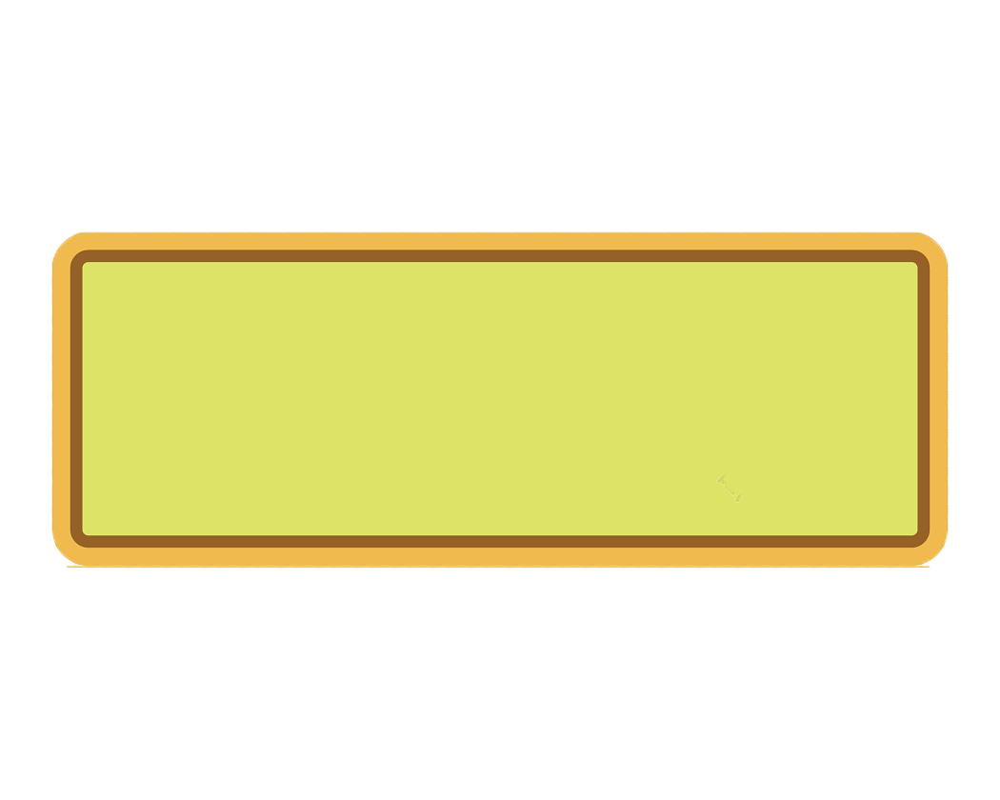

[卢娜没有发现靠近的你，她站在礼堂一处隐蔽的角落，一动不动，仰着脑袋凝视着天花板，魔法生成的雪花轻飘飘洒在她淡金色的发际。]
你：卢娜，你在看什么呢？
卢娜：波尔忑蛛网，好大一张，就在我们头上。你看到那边了吗，波尔忑蜘蛛正在织网。
你：我没看到什么蜘蛛，你一直在这里站着吗，不去享受一下圣诞晚会？
卢娜：他们身上都有骚扰牤，你知道，这是我最讨厌的东西。
[卢娜终于低下头，看着你。]卢娜：蜘蛛走了，她大概是不喜欢新切换的这首歌吧。波尔忑不喜欢太吵闹的歌曲。
你：既然蜘蛛已经走了，你要和我一起跳支舞吗？嗯...我身上没有你讨厌的骚扰牤吧？
卢娜：还是有的，在你头发上，抓一抓，现在没有了。
你：来吧。这首歌挺欢快的，我们一起跳，会很好玩的。
卢娜：其实我不大会跳舞，我怕踩着你的脚。
你：没关系，我带着你。
Back
Next